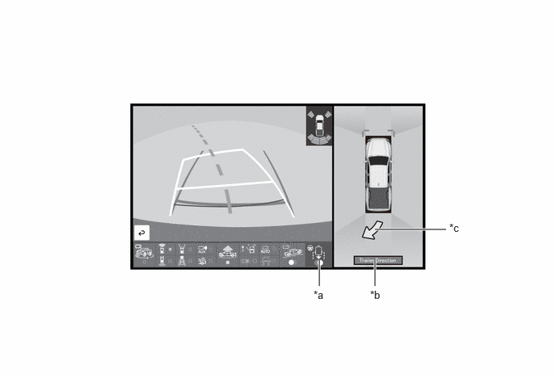

- Meter Buzzer
- Multi-information Display
| Last Modified: 10-07-2025 | 6.11:8.1.0 | Doc ID: RM100000002KPMN |
| Model Year Start: 2024 | Model: Tacoma | Prod Date Range: [03/2024 - ] |
| Title: PARK ASSIST / MONITORING: PANORAMIC VIEW MONITOR SYSTEM: TRAILER BACKUP GUIDE CONTROL; 2024 - 2026 MY Tacoma Tacoma HV [03/2024 - ] | ||
TRAILER BACKUP GUIDE CONTROL
FUNCTION OF MAIN COMPONENTS
|
Component |
Function |
|---|---|
|
*1: Models with manual transmission
*2: Models with automatic transmission *3: Gasoline models *4: HEV models |
|
|
Rear Television Camera Assembly |
Sends a video signal of the area to the rear of the vehicle to the parking assist ECU. |
|
Radio and Display Receiver Assembly |
Displays detection information to notify the driver when a static obstacle is detected behind the vehicle. |
|
Combination Meter Assembly |
|
|
Parking Assist ECU |
|
|
Trailer Back Guidance Switch |
Outputs trailer backup guide on or off signals to the parking assist ECU. |
|
Main Body ECU (Multiplex Network Body ECU) |
|
|
Back-up Light Switch Assembly*1 |
Outputs the R shift position signal to the ECM. |
|
Park/Neutral Position Switch Assembly*2 |
Detects the shift position and sends that information to the ECM. |
|
ECM |
|
|
Brake Actuator Assembly
|
Sends a vehicle speed signal and yawrate, deceleration sensor information to the parking assist ECU. |
|
Trailer Hitch Light (Trailer Reverse Assist Light Assembly) |
Inputs trailer hitch light illumination request signals and illuminates the trailer hitch light. |
|
Rack and Pinion Power Steering Gear Assembly
|
|
|
Central Gateway ECU (Network Gateway ECU) |
Relays the signal between the CAN communication buses. |
OPERATING CONDITION
(a) The trailer backup guide operates when all of the following conditions are met.
|
*1: Gasoline models
*2: HEV models |
|
SYSTEM CONTROL
(a) In the trailer backup guide, guidance for manual steering backup (Guidance mode) control is activated by pressing the trailer backup guidance switch with trailer information selected on the combination meter assembly. After it is activated, the mode can be switched to Straight Path Assist (SPA) control by touching the straight path assist button displayed on the multi-display.
(b) The trailer hitch light illuminates after the driver presses the trailer backup guidance switch and confirms/selects the trailer in the message displayed on the multi-information display. (This is unrelated to the deck light switch position)
(1) Guidance for Manual Steering Backup (Guidance Mode) Control
- During guidance for manual steering backup
(Guidance mode) control, the trailer turning
direction is displayed using an arrow on the
multi-display. The trailer direction arrow indicates
the trailer turning direction by calculating the
turning direction based on rear camera information,
steering angle signals, etc. A trailer angle
(jackknife) warning is also provided to warn the
driver by displaying "BRAKE Extreme Trailer Angle"
message and sounding the meter buzzer when it is
determined that the trailer is near the jackknife
condition based on trailer angle.
- Jackknife warning
- A warning is displayed and the meter buzzer is sounded to warn the driver when the trailer is at an extreme angle with the vehicle, in order to prevent the trailer from jackknifing. The driver is provided with instruction when the vehicle must be driven forward to straighten the trailer.
- Trailer direction arrow
- The trailer direction is displayed using camera images when the trailer is backing up or stopped.
- Jackknife warning
- Guidance for manual steering backup (Guidance
mode) control is canceled when one of the following
conditions is met.
- The trailer backup guidance switch is pressed during guidance for manual steering backup (Guidance mode) control.
- The panoramic view monitor switch is pressed.
- The vehicle speed is approximately 7.6 km/h (4.7 mph) or higher.
- VSC or ABS is operating.
- The tailgate is open.
- Trailer tracking is lost.
- When the shift position is changed to any position other than R.
- There is a malfunction in the trailer backup guide.
(2) Straight Path Assist (SPA) control
- Straight Path Assist (SPA) control is activated
by touching the straight path assist button in the
lower right of the multi-display. Straight Path
Assist (SPA) controls steering the trailer. If the
trailer direction is adjusted with the steering wheel
during control, the system recalculates the new
straight back direction when the steering wheel is
released by the driver.
NOTICE:
This system does not control the brakes. If there is a possibility of a collision, the brake pedal needs to be depressed to stop the vehicle.
- Straight Path Assist (SPA) control is canceled
when one of the following conditions is met.
- Any of the events, above, that cancel Guidance mode occur.
- The straight path assist button on the multi-display is touched during Straight Path Assist (SPA) control.
- The system temperature preservation function operates (to prevent the power steering equipment from overheating).
FUNCTION
(a) Trailer Backup Guide Operation
(1) The trailer backup guide can be turned on or off by pressing the trailer backup guidance switch with trailer information (that has already been registered) selected on the multi-information display in the combination meter assembly.*
(2) Straight Path Assist (SPA) is activated by touching the straight path assist button on the multi-display.
HINT:
*: If the trailer backup guidance switch is pressed without any trailer information registered, trailer backup guide activation is canceled and the system switches to the trailer registration procedure or ends.
(b) Trailer Backup Guide Display Content
(1) After pressing the trailer backup guidance switch and confirming/reselecting the trailer in the message displayed on the multi-information display, the mode switches to panoramic view and rear view mode. The panoramic view monitor functions continue to operate even after the trailer backup guide is activated.
|
*a |
Straight Path Assist Button |
*b |
Trailer Direction Message |
|
*c |
Trailer Direction Arrow |
- |
- |
DIAGNOSIS
(a) In order to make system inspections easier to perform, a diagnosis function is used in consideration of serviceability. The DTCs of malfunctioning parts can be read by connecting the GTS. Refer to the Repair Manual for details.